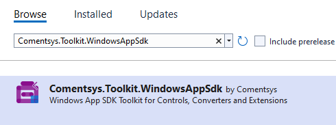
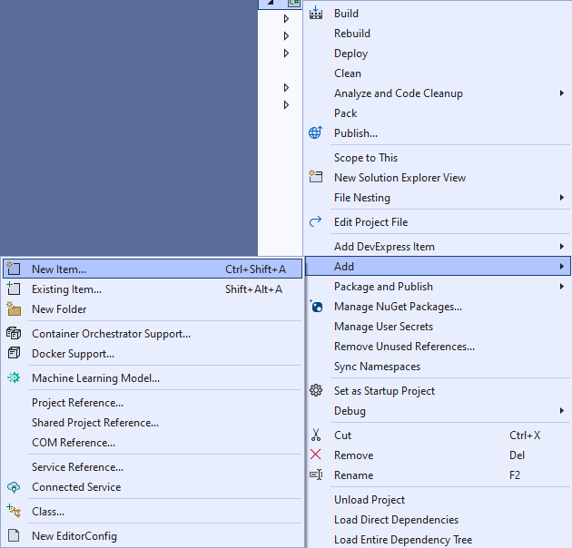
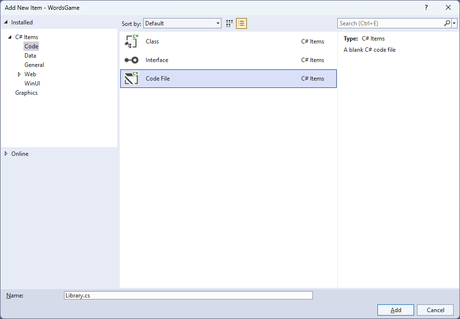
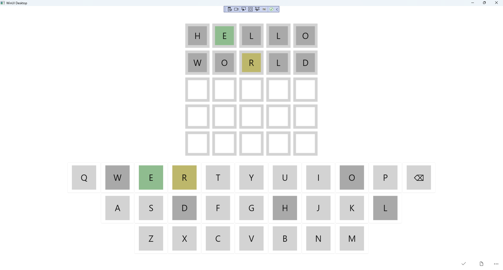

Words Game
Learn creating a Words Game using Windows App SDK with this Tutorial
Words Game shows how you can create a game based on Wordle where the aim is to guess the five-letter word with just five chances to guess correctly using toolkit from NuGet using the Windows App SDK.
Step 1
Follow Setup and Start on how to get Setup and Install what you need for Visual Studio 2022 and Windows App SDK.
Step 2
Then in Visual Studio within Solution Explorer for the Solution, right click on the Project shown below the Solution and then select Manage NuGet Packages...

Step 3
Then in the NuGet Package Manager from the Browse tab search for Comentsys.Toolkit.WindowsAppSdk and then select Comentsys.Toolkit.WindowsAppSdk by Comentsys as indicated and select Install

This will add the package for Comentsys.Toolkit.WindowsAppSdk to your Project. If you get the Preview Changes screen saying Visual Studio is about to make changes to this solution. Click OK to proceed with the changes listed below. You can read the message and then select OK to Install the package, then you can close the tab for Nuget: WordsGame by selecting the x next to it.
Step 4
Then in Visual Studio within Solution Explorer for the Solution, right click on the Project shown below the Solution and then select Add then New Item…

Step 5
Then in Add New Item from the C# Items list, select Code and then select Code File from the list next to this, then type in the name of Library.cs and then Click on Add.

Step 6
You will now be in the View for the Code of Library.cs to define a namespace allowing classes to be defined together,
usually each is separate but will be defined in Library.cs by typing the following Code along with using for Comentsys.Toolkit.WindowsAppSdk
and others plus an enum for State.
using Comentsys.Toolkit.Binding;
using Comentsys.Toolkit.WindowsAppSdk;
using Microsoft.UI;
using Microsoft.UI.Xaml;
using Microsoft.UI.Xaml.Controls;
using Microsoft.UI.Xaml.Data;
using Microsoft.UI.Xaml.Media;
using System;
using System.Collections.Generic;
using System.Collections.ObjectModel;
using System.IO;
using System.Linq;
using System.Net.Http;
using System.Threading.Tasks;
namespace WordsGame;
public enum State
{
Key,
Empty,
Absent,
Present,
Correct
}
// Position Class
// Item Class
// StateToBrushConvertor Class
// ItemTemplateSelector Class
// Words Class
public class Library
{
// Library Constants, Variables & GetIndexes Method
// Library ListCurrent, GetCurrent, Set & Check Method
// Library Over & Select Method
// Layout Method
// Setup, Load, Accept & New Methods
}
Step 7
Still in Library.cs for the namespace of WordsGame you will define a class for
Position after the Comment of // Position Class by typing the following:
public class Position : ObservableBase
{
private int _row;
private int _column;
private char _letter;
public Position(int row, int column, char letter) =>
(_column, _row, _letter) = (column, row, letter);
public int Row
{
get => _row;
set => SetProperty(ref _row, value);
}
public int Column
{
get => _column;
set => SetProperty(ref _column, value);
}
public char Letter
{
get => _letter;
set => SetProperty(ref _letter, value);
}
}
Position represents a Row and Column along with the Letter
and uses ObservableBase from the package of Comentsys.Toolkit.WindowsAppSdk.
Step 8
Still in Library.cs for the namespace of WordsGame you will define a class for
Item after the Comment of // Item Class by typing the following:
public class Item : ActionCommandObservableBase
{
private State _state;
private Position _position;
public Item(Position position, State state) : base(null) =>
(_position, State) = (position, state);
public Item(Position position, State state, Action<Position> action) :
base(new ActionCommandHandler((param) => action(position))) =>
(_position, State) = (position, state);
public Position Position
{
get => _position;
set => SetProperty(ref _position, value);
}
public State State
{
get => _state;
set => SetProperty(ref _state, value);
}
}
Item has Properties for Position and State uses
ActionCommandObservableBase from the package of Comentsys.Toolkit.WindowsAppSdk.
Step 9
Still in Library.cs for the namespace of WordsGame you will define a class
after the Comment of // StateToBrushConverter Class by typing the following:
public class StateToBrushConverter : IValueConverter
{
public object Convert(object value, Type targetType,
object parameter, string language)
{
if (value is State state)
{
return new SolidColorBrush(value switch
{
State.Empty => Colors.White,
State.Absent => Colors.DarkGray,
State.Present => Colors.DarkKhaki,
State.Correct => Colors.DarkSeaGreen,
_ => Colors.LightGray
});
}
return null;
}
public object ConvertBack(object value, Type targetType,
object parameter, string language) =>
throw new NotImplementedException();
}
StateToBrushConverter uses the interface of IValueConverter for Data Binding which will allow the colours of the
Item in the game to be represented from either White, Dark Grey, Dark Khaki, Dark Sea Green or Light Grey as a SolidColorBrush.
Step 10
Still in Library.cs for the namespace of WordsGame you will define a class
after the Comment of // ItemTemplateSelector Class by typing the following:
public class ItemTemplateSelector : DataTemplateSelector
{
public DataTemplate SpacerItem { get; set; }
public DataTemplate KeyItem { get; set; }
protected override DataTemplate SelectTemplateCore
(object value, DependencyObject container) =>
value is Item item ? item?.Command != null ?
KeyItem : SpacerItem : null;
}
ItemTemplateSelector will be used to provide a different DataTemplate depending on whether the Command has been set on an Item,
this will be useful when creating the Keyboard used in the game.
Step 11
Still in Library.cs for the namespace of WordsGame you will define a class
after the Comment of // Words Class by typing the following which will use HttpClient to get a list of Words for the game:
public class Words
{
private const string request = "https://raw.githubusercontent.com/tutorialr/winappsdk-tutorials/main/Code/WordsGame/words.txt";
private readonly List<string> _results = new();
private readonly HttpClient _client = new();
public async Task RequestAsync()
{
try
{
_results.Clear();
var response = await _client.GetStreamAsync(request);
using var reader = new StreamReader(response);
while (!reader.EndOfStream)
{
var word = await reader.ReadLineAsync();
if (word != null)
_results.Add(word);
}
}
catch { }
}
public List<string> Response => _results;
}
Step 12
While still in the namespace of WordsGame in Library.cs and in the class of Library after the
Comment of // Library Constants, Variables & GetIndexes Method type the following Constants, Variables and Method:
private const string title = "Words Game";
private const char backspace = '⌫';
private const char empty = ' ';
private const int count = 5;
private const int keys = 11;
private const int rows = 3;
private readonly Words _words = new();
private readonly ObservableCollection<Item> _keys = new();
private readonly ObservableCollection<Item> _items = new();
private readonly Random _random = new((int)DateTime.UtcNow.Ticks);
private readonly List<char> _letters = new()
{
'Q', 'W', 'E', 'R', 'T', 'Y', 'U', 'I', 'O', 'P', backspace,
empty, 'A', 'S', 'D', 'F', 'G', 'H', 'J', 'K', 'L', empty,
empty, empty, 'Z', 'X', 'C', 'V', 'B', 'N', 'M', empty, empty
};
private Dialog _dialog;
private string _word;
private bool _winner;
private int _column;
private int _row;
public static IEnumerable<int> GetIndexes(string source, char target)
{
int index = source.IndexOf(target);
while (index != -1)
{
yield return index;
index = source.IndexOf(target, index + 1);
}
}
Constants are values that are used in the game that will not change, Variables
are values that will be changed in the game and the Method of GetIndex is used to get the positions of characters in a string.
Step 13
While still in the namespace of WordsGame in Library.cs and in the class of Library after the
Comment of // Library ListCurrent, GetCurrent, Set & Check Method type the following Methods:
private IEnumerable<Item> ListCurrent() =>
_items.Where(f => f.Position.Row == _row);
private Item GetCurrent() =>
_items.FirstOrDefault(
f => f.Position.Row == _row
&& f.Position.Column == _column);
private void Set(Position position, State state)
{
var key = _keys.FirstOrDefault(
f => f.Position.Letter == position.Letter);
if (key != null)
key.State = state;
var item = _items.FirstOrDefault(
f => f.Position.Row == _row
&& f.Position.Column == position.Column
&& f.Position.Letter == position.Letter);
if (item != null)
{
item.Position.Letter = position.Letter;
item.State = state;
}
}
private bool Check()
{
var current = ListCurrent();
foreach(var item in current)
{
var state = State.Absent;
var indexes = GetIndexes(_word, item.Position.Letter);
if(indexes?.Any() == true)
{
foreach (var index in indexes)
{
state = item.Position.Column == index ?
State.Correct : State.Present;
}
}
Set(item.Position, state);
}
var word = string.Join(string.Empty, current.Select(s => s.Position.Letter));
_winner = _word.Equals(word, StringComparison.InvariantCultureIgnoreCase);
return _winner;
}
ListCurrent is used to return the items for a given Row with GetCurrent returning an Item for a
given Row and Column plus Set is used to update the State for the Keyboard and Display of items
and Check is used to determine if the letters are there, in right place or not present at all in the Word to guess.
Step 14
While still in the namespace of WordsGame in Library.cs and in the class of Library after the
Comment of // Library Over & Select Method type the following Methods:
private bool Over()
{
if (_row == count)
{
_dialog.Show($"Game Over! You did not get the word {_word}!");
return true;
}
else if(_winner)
{
_dialog.Show($"Game Over! You got the word {_word} correct!");
return true;
}
return false;
}
private void Select(Position position)
{
if (!Over())
{
if (position.Letter == backspace)
{
if (_column > 0)
{
_column--;
var current = GetCurrent();
if (current != null)
{
current.State = State.Empty;
current.Position.Letter = empty;
}
}
}
else
{
if (_column < count)
{
var current = GetCurrent();
if (current != null)
{
current.State = State.Key;
current.Position.Letter = position.Letter;
_column++;
}
}
}
}
}
Over is used to check if the game has been completed and show the appropriate message using a Dialog and
Select is used when choosing a letter or using the backspace option.
Step 15
While still in the namespace of WordsGame in Library.cs and in the class of Library after the
Comment of // Library Layout Method type the following Method:
private void Layout(ItemsControl display, ItemsControl keyboard)
{
int index = 0;
_keys.Clear();
_items.Clear();
for (int row = 0; row < count; row++)
{
for (int column = 0; column < count; column++)
{
_items.Add(new Item(
new Position(column, row, empty),
State.Empty));
}
}
display.ItemsSource = _items;
for (int row = 0; row < rows; row++)
{
for (int column = 0; column < keys; column++)
{
var letter = _letters[index];
var position = new Position(row, column, letter);
if (letter == empty)
_keys.Add(new Item(position,
State.Empty));
else
_keys.Add(new Item(position,
State.Key, (Position p) => Select(p)));
index++;
}
}
keyboard.ItemsSource = _keys;
}
Layout is used to create the look and feel of the game including configuring the Display and Keyboard elements used in the game which use an ItemsControl.
Step 16
While still in the namespace of EmojiGame in Library.cs and in the class of Library after the
Comment of // Setup, Load, Accept & New Method type the following Methods
for Setup and Load which will initialise the game and list of Words plus Accept to confirm the input Word and New to start a new game.
private void Setup()
{
_row = 0;
_column = 0;
_winner = false;
var total = _words.Response.Count;
if (total > 0)
{
var choice = _random.Next(0, total - 1);
_word = _words.Response[choice];
foreach (var key in _keys)
key.State = State.Key;
foreach (var item in _items)
{
item.State = State.Empty;
item.Position.Letter = empty;
}
}
else
_dialog.Show("Failed to load Word List!");
}
public async void Load(ItemsControl display, ItemsControl keyboard)
{
_dialog = new Dialog(display.XamlRoot, title);
await _words.RequestAsync();
Layout(display, keyboard);
Setup();
}
public void Accept()
{
if(_row < count)
{
if (_column == count)
{
if (!Check())
{
_column = 0;
_row++;
}
}
else
_dialog.Show("Not enough letters");
}
Over();
}
public void New() =>
Setup();
Step 17
Step 18
In the XAML for MainWindow.xaml there will be some XAML for a StackPanel, this should be Removed:
<StackPanel Orientation="Horizontal"
HorizontalAlignment="Center" VerticalAlignment="Center">
<Button x:Name="myButton" Click="myButton_Click">Click Me</Button>
</StackPanel>
Step 19
While still in the XAML for MainWindow.xaml below <Window, type in the following XAML:
xmlns:ui="using:Comentsys.Toolkit.WindowsAppSdk"
The XAML for <Window> should then look as follows:
<Window
xmlns:ui="using:Comentsys.Toolkit.WindowsAppSdk"
x:Class="WordsGame.MainWindow"
xmlns="http://schemas.microsoft.com/winfx/2006/xaml/presentation"
xmlns:x="http://schemas.microsoft.com/winfx/2006/xaml"
xmlns:local="using:WordsGame"
xmlns:d="http://schemas.microsoft.com/expression/blend/2008"
xmlns:mc="http://schemas.openxmlformats.org/markup-compatibility/2006"
mc:Ignorable="d">
Step 20
While still in the XAML for MainWindow.xaml above </Window>, type in the following XAML:
<Grid>
<Grid.Resources>
<local:StateToBrushConverter x:Key="StateToBrushConverter"/>
<DataTemplate x:Name="ItemTemplate">
<ui:Piece IsSquare="True"
Stroke="LightGray"
Value="{Binding Position.Letter}"
Fill="{Binding State, Mode=OneWay,
Converter={StaticResource StateToBrushConverter},
ConverterParameter=True}" />
</DataTemplate>
<DataTemplate x:Name="KeyTemplate">
<Button Command="{Binding Command}">
<ui:Piece IsSquare="True"
Value="{Binding Position.Letter}"
Fill="{Binding State, Mode=OneWay,
Converter={StaticResource StateToBrushConverter},
ConverterParameter=True}" />
</Button>
</DataTemplate>
<DataTemplate x:Name="SpacerTemplate">
<Grid/>
</DataTemplate>
<local:ItemTemplateSelector x:Key="ItemTemplateSelector"
KeyItem="{StaticResource KeyTemplate}"
SpacerItem="{StaticResource SpacerTemplate}"/>
</Grid.Resources>
<Viewbox>
<!-- StackPanel -->
</Viewbox>
<CommandBar VerticalAlignment="Bottom">
<AppBarButton Icon="Accept" Label="Accept" Click="Accept"/>
<AppBarButton Icon="Page2" Label="New" Click="New"/>
</CommandBar>
</Grid>
This XAML contains a Grid with a Viewbox which will Scale a StackPanel to be added in the next Step.
It has an event handler for Accept and New for each AppBarButton and defines the Templates that will be used in the game.
Step 21
While still in the XAML for MainWindow.xaml below the Comment of <!-- StackPanel --> type in the following XAML:
<StackPanel Margin="50" Orientation="Vertical" Loaded="Load">
<ItemsControl Name="Display" Margin="10"
HorizontalAlignment="Center"
ItemTemplate="{StaticResource ItemTemplate}">
<ItemsControl.ItemsPanel>
<ItemsPanelTemplate>
<VariableSizedWrapGrid MaximumRowsOrColumns="5"/>
</ItemsPanelTemplate>
</ItemsControl.ItemsPanel>
<ProgressRing/>
</ItemsControl>
<ItemsControl Name="Keyboard" Margin="10"
HorizontalAlignment="Center"
ItemTemplateSelector="{StaticResource ItemTemplateSelector}">
<ItemsControl.ItemsPanel>
<ItemsPanelTemplate>
<ItemsWrapGrid MaximumRowsOrColumns="11"
Orientation="Horizontal"/>
</ItemsPanelTemplate>
</ItemsControl.ItemsPanel>
</ItemsControl>
</StackPanel>
This XAML contains a StackPanel with a Loaded event handler for Load with the
ItemsPanel for it set to use a VariableSizedWrapGrid and ItemsWrapGrid and uses the ItemTemplate
and the previously defined class of ItemTemplateSelector.
Step 22
Step 23
In the Code for MainWindow.xaml.cs there be a Method of myButton_Click(...) this should be Removed by removing the following:
private void myButton_Click(object sender, RoutedEventArgs e)
{
myButton.Content = "Clicked";
}
Step 24
Once myButton_Click(...) has been removed, within the Constructor of public MainWindow() { ... } and below the line of this.InitializeComponent(); type in the following Code:
private readonly Library _library = new();
private void Load(object sender, RoutedEventArgs e) =>
_library.Load(Display, Keyboard);
private void Accept(object sender, RoutedEventArgs e) =>
_library.Accept();
private void New(object sender, RoutedEventArgs e) =>
_library.New();
Here an Instance of Library is created then below this are the Methods of Load, Accept and New that will be used with Event Handler
from the XAML, these Methods use Arrow Syntax with the => for an expression body which is useful when a Method only has one line.
Step 25
Step 26
Once running you can then use the on-screen Keyboard to enter a Word with 5 letters and then use Accept then you will see which letters are in the correct position in Green, are in the Word but in the wrong position in Yellow or Dark Grey if no letters are in the Word and you get 5 chances to guess or you lose so guess correctly to win, or select New to start a new game.
